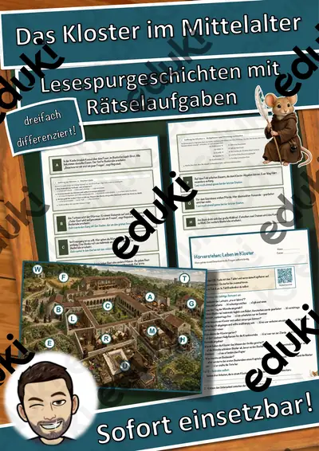
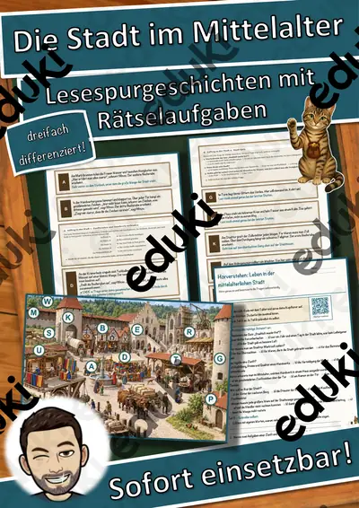

Musik im Mittelalter – Mönche, Minnesänger und Spielleute – Lesespurgeschichte mit Rätselaufgaben (Klasse 7)
Musik im Mittelalter – Mönche, Minnesänger und Spielleute – Lesespurgeschichte Musik (Klasse 7)Begib dich mit deiner Klasse auf eine spannende Lesespur ins Mittelalter! Ilka und Benno besuchen mit ihrem Musikkurs ein Burgfest mit Musik: In der Kapelle erklingt der einstimmige Gregorianische Choral, in der Schreibstube entdecken sie Neumen und die Erfindung der Notenlinien durch Guido von Arezzo, im Rittersaal singt ein Minnesänger von seiner verehrten Dame. In der Spielmannsgasse erfahren sie, wie die fahrenden Spielleute lebten, in der Instrumentenkammer brummt die Drehleier ihren Bordun, auf dem Tanzplatz wird im Kreis getanzt – und auf der Sängerbühne wartet ein kleiner Sängerwettstreit. Ihre Laute Lauti ist immer dabei. Am Ende jedes Abschnitts verrät ein Hinweis den nächsten Ort auf dem Plan – nur wer genau liest, findet den Weg und sammelt alle geheimen Buchstaben zum Lösungswort.
Die perfekte Lesespur für den MUSIKUNTERRICHT der 7. Klasse – ideal als Einstieg in die Musikgeschichte: Sie verbindet sinnentnehmendes Lesen mit Musik und Gesellschaft des Mittelalters, Fachbegriffen und der Entwicklung der Notenschrift. Das Material ist SOFORT EINSETZBAR und in DREI DIFFERENZIERUNGSSTUFEN (leicht ★ / mittel ★★ / schwer ★★★) angelegt.WICHTIG: Das komplette Material ist sowohl in FARBE als auch in SCHWARZ-WEISS enthalten – ideal zum Sparen von Druckkosten.DAS IST ENTHALTEN
- Lesespurgeschichte in 3 Niveaus (leicht, mittel, schwer)
- farbiger Plan als Suchkarte
- Hörverstehen mit QR-Code zur MP3 (selbstständiges Hören mit Kopfhörern)
- vier Aufträge auf dem Weg: eine Zuordnung, ein Quiz, eine Rechenaufgabe und ein Steckbrief
- Rätselseite (Wörter-Suchsel + Fragen)
- Ausmalbild zum Thema (Spielleute im Burghof)
- ausführliches Lösungsblatt für die Lehrkraft
- alles zusätzlich als komplette Schwarz-Weiß-VarianteSO GEHT DIE LESESPURDie Jugendlichen lesen ab START, finden im Text den nächsten Ort, suchen ihn auf dem Plan und lesen bei dieser Station weiter. An jeder richtigen Station gibt es einen Buchstaben. Eingebaute Sackgassen (Pferdestall, Brunnen, Waffenkammer, Burgküche) sind keine Stationen und dienen der Selbstkontrolle. Am Ende werden die gesammelten Buchstaben umgestellt und ergeben ein geheimes Lösungswort. (Die Lösungen sind selbstverständlich nur im Lösungsblatt für die Lehrkraft enthalten.)INHALTLICHER SCHWERPUNKTDie Jugendlichen lernen den Gregorianischen Choral, Neumen und Notenlinien, den Minnesang, das Leben der Spielleute sowie typische Instrumente (Laute, Fiedel, Drehleier, Schalmei, Dudelsack) und Tänze des Mittelalters kennen und ordnen sie in ihren gesellschaftlichen Zusammenhang ein.ABGEDECKTER LEHRPLAN (Klasse 7, Musik)
- Musik (LehrplanPLUS Bayern) – Jahrgangsstufe 7 „Musik – Mensch – Zeit“: Musik des Mittelalters im historischen und gesellschaftlichen Zusammenhang kennen, typische Instrumente beschreiben und die Entwicklung der Notenschrift nachvollziehen.
- Deutsch – Lesen und mit Texten umgehen: Sachinformationen gezielt entnehmen; Zuhören: einem Sachhörtext konzentriert folgen (Hörverstehen mit MP3).
- Mathematik – Addition und Multiplikation (Saiten zählen).
- Fächerübergreifend / Kompetenzen: Geschichte (Leben im Mittelalter, Stände), Religion (Klosterleben), genaues Lesen und Prüfen, kreatives Gestalten (Ausmalbild).
Geeignet für Freiarbeit, Stationenlernen, Vertretungsstunden, Wochenplan, Projekttage und Distanzunterricht. Klassenstufe 7.
Ähnliche Materialien

Mittelalter Lückentext mit Wortspeicher Hörverstehen und Suchsel

Mönch Lückentext mit Wortspeicher Hörverstehen und Suchsel

Das Kloster im Mittelalter – Lesespurgeschichte mit Rätselaufgaben (Klasse 6)

Die Stadt im Mittelalter – Lesespurgeschichte mit Rätselaufgaben (Klasse 6)

Dame Lückentext mit Wortspeicher Hörverstehen und Suchsel

Sprechstunde - Leben im Mittelalter - Burgen, Klöster, Ständegesellschaft - Lass uns reden

Feudalismus Lückentext mit Wortspeicher Hörverstehen und Suchsel